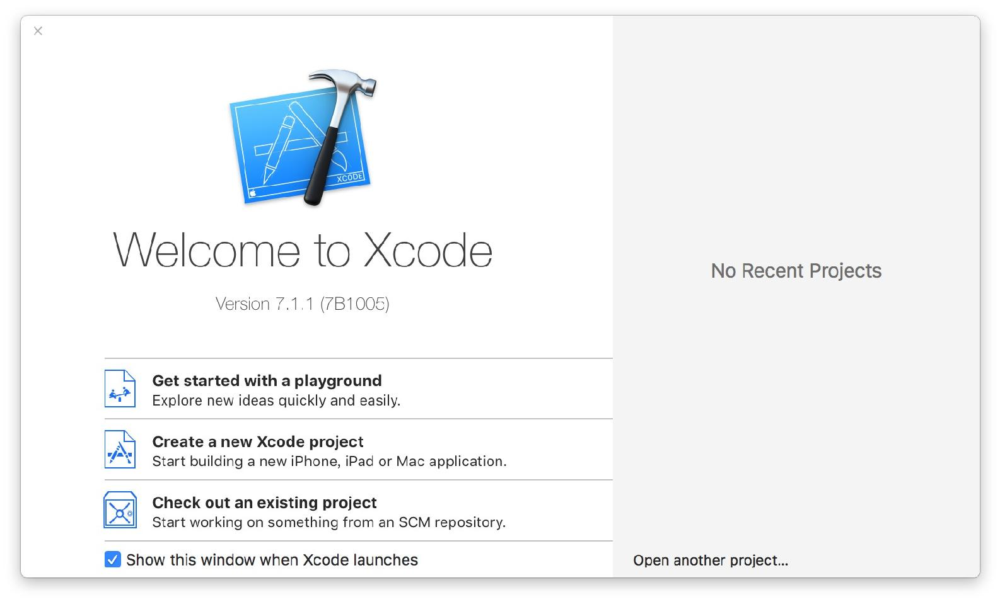

WWDC15 之后，苹果宣布 Swift 开源，这是 WWDC 最高潮的一刻，掌声经久不息，我也红了眼眶。
Swift Anywhere 很快会成为现实，作为 Objective－C 的继任者，学习它也显得格外重要。
那么我们就从 Swift 开始 iOS 的编程之旅吧，在开始前，需要去 OS X 的 AppStore 下载 Xcode 这个软件。
编程就像在用计算机能看得懂的语言，给计算机讲述一个故事，让它去做你想做的事情，相比起现实世界，其实除了语言略有不同，其他并没有什么差别。所以并不需要觉得这是一件很困难的事情，当你觉得难以理解的时候，请发挥想象力。
在现代编程，有个概念需要理解清楚——类。
计算机世界的 “类” 就像现实世界的 “东西”，如果把 App 看作一个机器人，那么类就像他的零件。类被设计用来完成一件事情，这个事情可大可小，完全由你掌控。
不如一起写一个转换阿拉伯数字为中文的类来了解下到底什么是类，你可以在 Github Swift 文件夹中找到相关代码。
首先打开 Xcode 点击 Get started with a playground

现实世界
有一个东西叫做 NumberParser（数字转换器）
//Swift 世界
class NumberParser {
}
在 Swift 里，一个类就是这么简单就完成，并且给他起了个名字叫 NumberParser，但是这东西除了占点空间啥都还做不了，所以我们要教会它第一件事情就是把单个数字字符 0 转换成中文字符 零。
现实世界
NumberParser 可以做一件叫做 singleNumberToChinese 的事情，这件事可以把一个阿拉伯数字转换成汉语大写的数字。
//Swift 世界
class NumberParser {
func singleNumberToChinese(number: Character) -> String {
switch number {
case "0":
return "零"
case "1":
return "一"
case "2":
return "二"
case "3":
return "三"
case "4":
return "四"
case "5":
return "五"
case "6":
return "六"
case "7":
return "七"
case "8":
return "八"
case "9":
return "九"
default:
return ""
}
}
}
func 是 function （方法）的缩写，在这里就是指有件事情叫 singleNumberToChinese，我会给你一个名为 number 的字符（Character），你返回一个字符串（String） 给我，如果对于一个字符不知道该怎么处理的情况（比如我给你了一个“一”），你可以直接返回一个空文字给我代表无法处理。
落实到具体做事的方法呢，就是，通过 switch 来对不同的 case （情况）进行判断处理，number 是 "0" ，那么返回（return） “零”，如果不是我们想要的哪几种情况，则返回空字符串。
嗯，这个零件就完成了。
如果你要使用这个零件，那么要做一件事情就是实例化，其实上面写的那些代码其实是一个零件的图纸，要通过实例化变成一个真正的零件。
let convertor = NumberParser()
let zeroString = convertor.singleNumberToChinese("0")
print(zeroString)
这时候点击右上角中间蓝色的图标
就可以开启 Console （终端）看到日志里面有个 零。
Swift 中，let 用来创建常量，var 用来创建变量。
使用 let 创建的常量不能够重新赋值，例如
let str = "Swift"
str = "Taylor"
因为 str 使用 let 创建，所以不能重新赋值，这里就会报错。
如果你采用的是 var 就可以针对变量重新赋值。
var str = "Swift"
str = "Taylor"
Swift 中对于方法的调用非常的简单，即在对象名字后面加上 . 和想要调用的方法名。举例， 如果想要使用 conventor 对象的 singleNumberToChinese 方法，可以用 convertor.singleNumberToChinese() 这种方式，在括号里放进去我们要转换的数字，返回的数字就存到 zeroString 里。
最终我们使用 print() 这个 App 本身能理解的函数打印 zeroString 到屏幕上。
明白了这两个基础的概念，我们就可以开始 “搬砖” 了。
类的继承就是继承上一代的功能，改造或衍生出新功能。
假如我们需要一个 NumbersParser 那么可以这么写
class NumbersParser: NumberParser {
func numberToChinese(number: Int) -> String {
let numbers = String(number).characters
var finalString = ""
for singleNumber in numbers{
let string = singleNumberToChinese(singleNumber)
finalString = "\(finalString)\(string)"
}
return finalString
}
}
你这下是不是看晕了？ NumbersParser 和 NumberParser 没区别啊？ 仔细看看，中间有个 s 的区别。
这是非常好的一个命名问题的例子，千万不要采用这种非常像的名字来命名不同的类，你会把自己搞晕的。
从另外一个角度，再遇到不明 Bug 的时候，一定要仔细看你是不是打错了名字了。
此时这个 NumbersParser 就可以利用 NumberParser 的方法来实现 numberToChinese。
for singleNumber in numbers 这种，for x in y 的形式的方法是逐个取出 y 中的元素，命名为 x。
Swift 使用 "\(finalString)\(string)" 这种方式来组成字符串。
例如
var name = "牛奶"
print("今天早上我有喝 \(name)")
就可以得到结果 —— “今天早上我有喝牛奶”
let conventor = NumbersParser()
let yearString = conventor.numberToChinese(2015)
print(yearString)
此时就可以得到我们想要的结果 —— 二零一五
像 NumbersParser 这种类你可能会在程序里多处使用，如果每次使用的时候，都 let conventor = NumbersParser() 一下就显得多余。就像现实场景一样，你要在每个房间里都可以听歌不见得需要每个房间都放一台音响，你可以搬过去。
单例就是为此而生。
给类增加一个这样的方法
class NumbersParser: NumberParser {
static let sharedInstance = NumbersParser()
...
}
这样你每次使用的时候，就可以简化几步
let numbersString = NumbersParser.sharedInstance.
numberToChinese(2015)
print(numbersString)
单例有诸多便利之处，像这种负责单纯的单位转换场景的类非常适合用单例。不过 也有其滥用的危害，在被坑到之前，你并不需要过多在意。
这也是一个极为有趣的功能，例如你想利用上面的方法实现一个 YearParser，输入 2015 可以输出 二零一五年，那么可以这么做
class YearParser: NumbersParser {
static let sharedYearParserInstance = YearParser()
override func numberToChinese(number:Int) -> String {
let numbersString = super.numberToChinese(number)
return "\(numbersString)年"
}
}
override 的意思是说明要对某个方法进行改造。super.numberToChinese(number) 可以使用改造前的方法，得到旧的结果，随后用 "\(numbersString)年" 格式化了结果
因此
let yearString = YearParser.sharedYearParserInstance.
numberToChinese(2015)
print(yearString)
得到的 yearString 结果就是 —— “二零一五年”。
YearParser 里对于 NumbersParser 的改造并不会影响 NumbersParser 的结果，所以
let numbersString = NumbersParser.sharedInstance.
numberToChinese(2015)
print(numbersString)
得到的结果依旧是 —— “二零一五”
如果你希望全盘改造，就不要使用 super.numberToChinese(number) 方法，完全重写一个即可。
Swift 中相当重要的另外一个概念，就是 protocol （协议），在 Swift 里，指定一个物体可以回答另外一个物体的问题，就叫做协议。
例如，你养了一只猫，那么如果猫咪问你它是不是可以去睡觉了，你就要回答这个问题。
首先定义这个协议
protocol SleepDelegate {
func canISleep() -> Bool
}
协议并不规定具体的答案，只定义可以回答什么问题，上面这个协议，定义了 canISleep 这个问题， -> 这个箭头表示左边的问题可以得到右边的答案类型，在这里即为 Bool，Bool 是一个布尔值（发明这个东西的人的名字），可以为 true （真）或者 false（假），布尔值可以通过 if...else 语句来判断，例如
if 1 > 2 {
print("You must be kidding")
} else {
print("Yeah")
}
1 > 2 是一个判断语句，在这个情况下会返回 false，那么就不会执行 if 的后 {} 中的内容，而是会执行 else 后 {} 的内容。
class Human: SleepDelegate {
func canISleep() -> Bool {
return false
}
}
我们创建了 Human 这个类，冒号后面加了 SleepDelegate，代表 Human 可以回答 SleepDelegate 里的问题。而在 canISleep 这个问题上，我们 return (回答) false。
最后我们创建 Cat 这个类
class Cat {
var delegate: SleepDelegate?
func wantsToSleep() {
if let master = delegate {
if master.canISleep() {
print("Go To Sleep")
} else {
print("No")
}
}
}
}
我们给 cat 加入了个属性，delegate（委托人），委托人可以回答 SleepDelegate 里的问题，后面还加了个问号表示 delegate 并不一定存在。
因此在 wantsToSleep 这个方法里，我们首先用 if let master = delegate 对其进行了拆包，只有 delegate 这个属性真的存在的时候，才能通过拆包，let master = delegate 就可以产生一个 true，通过 if 的布尔测试，并把 delegate 的值赋值给 master，master 其实可以使用任何名字，通常我们会直接使用 delegate，写成 if let delegate = delegate。
最后，通过 master.canISleep() 来询问是否可以睡觉。
let myCat = Cat()
myCat.delegate = Human()
myCat.wantsToSleep()
enum（枚举）的名字虽然比较晦涩，但是可以很好的帮助我们编写可读性更高的代码，swift 中的 enum 非常强大，我们这里只了解一下初级但是最常见的用法
enum China: Int {
case Guangzhou = 0
case Beijing
var description: String {
switch self {
case Guangzhou:
return "广州"
case Beijing:
return "北京"
}
}
}
我们这里定义了一个叫 China 的 Int（整数） 枚举类型，给 Guangzhou 设置值为 0，Beijing 会自动被递增为 1。
通过 description 给这个枚举类型定义了一个 String（字符串）属性，给不同的 case 返回了不同的中文。
那么在实际环境中，就可以这样应用。
class City {
var name = China.Guangzhou
}
let guangzhou = City()
print(guangzhou.name.description)
// 直接输出 enum 的值
print(China.Guangzhou.description)
通过 enum，我们既可以提高可读性，也可以提高代码的效率。
你可以在 Producter Demos 的 Swift 文件夹里找到 Swift.playground 来测试本章节的内容。